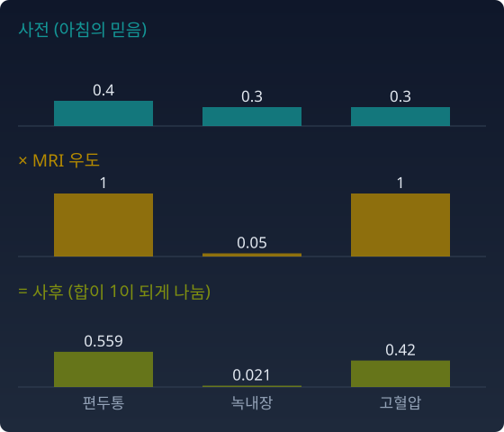
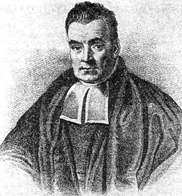

베이즈 갱신에서는 사전분포에 우도(가설이 맞을 때 관측이 나올 확률)를 곱한다. 왜 덧셈이 아니라 곱셈인가? 섞는 것이 「모른다」의 표현이었다면, 곱하는 것은 무엇의 표현인가?
의사의 낮 — 검사 결과를 곱하다
오후. MRI 결과가 나왔다. MRI는 녹내장에는 반응하지 않고, 편두통과 고혈압에만 특정 패턴을 보인다. 이 정보(우도)를 아침의 믿음(사전분포)에 곱한다.
곱셈이 하는 일. 녹내장 가능성은 우도가 0에 가까우므로 눌린다. 편두통과 고혈압만 살아남는다. 세 봉우리가 두 봉우리로 줄었다. 「겹치는 영역만 살아남는다」.

사전 (0.4, 0.3, 0.3)에 MRI 우도 (1, 0.05, 1)을 곱하고 합이 1이 되게 나누면 사후 (0.559, 0.021, 0.420). 녹내장 막대가 눌린다
혈액검사가 추가로 나오면 또 곱한다. 고혈압의 증거가 약하면 그것도 눌린다. 마지막에 편두통 하나만 남는다. 이 이야기에서는 곱할 때마다 봉우리가 줄고, 분포가 좁아진다. 「곱셈은 확신의 기록이다.」
다만 「이 이야기에서는」이라는 단서를 붙여 두자. 곱셈이 언제나 분포를 좁히지는 않는다. 다음 절에서 반례를 본다.
이미지 생성의 프롬프트 확장 — 가능성을 좁히다
다시 Stable Diffusion. 이번에는 와일드카드가 아니라 쉼표(,)로 조건을 덧붙인다. 「1girl」을 「1girl, smiling」으로 늘리는 것이다.
「smiling」은 필터처럼 읽힌다. 웃는 소녀의 이미지는 통과시키고 나머지는 누른다. 조건을 하나 더 거는 이 일을 확률로 옮기면 곱이 된다. p(그림 | 1girl) × p(smiling | 그림). 두 조건이 겹치는 영역만 살아남는다.
프롬프트를 더 늘리면 조건마다 필터가 하나씩 곱해지고, 가능한 이미지의 범위가 점점 좁아진다.
1girl, smiling, red hair, school uniform, cherry blossom
각 조건은 로그 공간에서 더해진다. log p(그림 | 모든 조건) = log p(그림 | 1girl) + log p(smiling | 그림) + log p(red hair | 그림) + … − log Z. 곱셈이 로그 공간의 덧셈이 된다. 마지막의 log Z는 전체 확률을 1로 되돌리는 정규화 상수다.
이것은 확률로 옮긴 말이다. 보통의 이미지 모델은 쉼표로 이은 프롬프트 전체를 한 번에 읽어 그림을 만들 뿐, 조건마다 확률을 따로 곱하지 않는다. 조건마다 따로 계산해 곱하도록 만든 방법도 있다. 2022년 리우(Nan Liu) 등의 합성 디퓨전(Composable Diffusion)은 「A AND B」를 p(그림) × p(A | 그림) × p(B | 그림)에 비례하는 분포로 정의하고, 두 조건이 그림을 두고 서로 독립이라고 가정해 이 곱을 계산한다.
식의 π는 원주율이 아니라 가설 위의 믿음(분포)을 적는 글자다. 우도를 조금씩(t만큼) 반영하며 사전에서 사후로 가는 길 πt는 사전과 사후를 잇는 기하평균 보간과 정확히 같은 곡선이다. 사후 ∝ 사전 × 우도이므로, 사전1−t × 사후t ∝ 사전 × 우도t이기 때문이다. 베이즈 갱신은 e-측지선을 따라 걷는 일이다.
직접 움직여 보기
불러오는 중…
파이썬
import numpy as np
def H(p):
p = p[p > 0]
return -np.sum(p * np.log(p)) + 0.0 # -0.0 을 0.0 으로
def update(prior, lik, t=1.0): # 사전 × 우도^t, 정규화
u = prior * lik**t
return u / u.sum()
# 아침의 믿음: 편두통, 녹내장, 고혈압. MRI: 녹내장에는 반응 없음
prior = np.array([0.4, 0.3, 0.3])
mri = np.array([1.0, 0.05, 1.0])
for t in [0, 0.5, 1]:
q = update(prior, mri, t)
print(f"t={t:<3} {np.round(q, 3)} H {H(q):.3f}")
# t=0 [0.4 0.3 0.3] H 1.089
# t=0.5 [0.521 0.087 0.391] H 0.920
# t=1 [0.559 0.021 0.42 ] H 0.770
우도를 반만 반영한 믿음은 녹내장을 이미 0.087까지 눌렀다. 이 길 위에서는 엔트로피가 1.089에서 0.770으로 줄어든다.
수확
「프롬프트에 쉼표로 조건을 더하는 것을 확률로 옮기면 곱셈이다. 곱셈의 길은 로그 밀도를 더하는 직선(e-측지선)이고, 베이즈 갱신은 이 길을 걷는다.」
인물 이야기 — 베이즈와 「역방향 확률」

토머스 베이즈의 초상으로 전해지는 그림. 출처: Wikimedia Commons, 퍼블릭 도메인
그림: 1936년에 나온 생명보험 역사책에 「T. 베이즈 목사」로 실린 초상. 머리 모양과 옷차림이 베이즈가 살던 18세기 것과 맞지 않아, 실제로 베이즈인지는 의심받는다. 출처 Wikimedia Commons, 퍼블릭 도메인
1730년대, 잉글랜드 턴브리지웰스. 토머스 베이즈(Thomas Bayes)는 이곳 마운트 시온 예배당의 장로교 목사였다(1752년까지). 직업 수학자는 아니었다. 생전에 낸 수학 저작은 익명의 소책자 하나뿐이었다. 1736년, 철학자이자 주교인 버클리(George Berkeley)의 비판에 맞서 뉴턴의 유율법(미적분)을 변호한 글이다. 그래도 수학 실력은 알려져 있었던지, 1742년 왕립학회 회원이 되었다.
그가 남긴 문제는 이것이었다. 무언가가 일어난 횟수와 일어나지 않은 횟수만 알 때, 그 일이 한 번에 일어날 확률이 어느 범위에 있다고 말할 수 있는가? 논문은 이 문제를 네모난 탁자 위의 공으로 푼다. 공 하나를 던져 멈춘 자리를 모른 채, 공을 더 던져 그 공들이 첫 공의 왼쪽에 몇 번 멈췄는지만 센다. 그 횟수로 첫 공의 자리를 거꾸로 추론한다. 흔히 당구대 이야기로 옮겨지지만 베이즈 자신은 당구라는 말을 쓰지 않았다. 논문에는 복권 예도 있다. 꽝 열 장과 당첨 한 장을 본 사람이, 꽝과 당첨의 참 비율이 9 : 1에서 11 : 1 사이에 있을 확률을 셈하면 7.7%쯤이다. 꽝 1만 장과 당첨 1천 장을 보고 나면 그 확률이 97%쯤으로 오른다.
설명을 위해 더 익숙한 예로 바꿔 보자(베이즈의 원래 예는 아니다). 동전을 열 번 던져서 앞면이 일곱 번 나왔다. 순방향은 쉽다. 앞면 확률이 0.7인 동전이 열 번 중 일곱 번 앞면을 낼 확률은 계산할 수 있다. 역방향은 어렵다. 일곱 번의 앞면을 본 뒤, 앞면 확률이 얼마인지를 역으로 추론하는 것.
답의 핵심은 「사전 확률(prior)」이다. 던지기 전에 앞면 확률에 대해 이미 갖고 있는 믿음이 있다. 그 믿음에 데이터의 우도를 곱해서 갱신하면 새로운 믿음(사후 확률, posterior)이 된다.
사전 × 우도 → 사후. 이것이 베이즈 정리다. 그리고 이 「곱한다」는 연산이 바로 이 장의 주제다.
곱한다는 것은 AND다. 사전 믿음이 「이 동전은 대체로 공정할 것이다」이고 데이터가 「앞면이 많이 나왔다」이면, 두 정보가 함께 지지하는 곳만 살아남는다. 대개는 사전보다 좁아진다. 확신의 방향이다. 다만 언제나 좁아지는 것은 아니다.
베이즈는 1761년 4월에 세상을 떠났다. 친구 리처드 프라이스(Richard Price)가 유고에서 이 논문을 찾아 2년 가까이 다듬은 뒤, 1763년 12월 왕립학회에서 읽히게 했다. 프라이스는 서문을 쓰고 고친 곳과 보탠 곳을 더했으며, 베이즈가 남긴 두 풀이 가운데 하나를 골라 실었다. 「베이즈의 정리」에는 사실 프라이스의 몫이 적지 않다.
1774년, 프랑스의 라플라스(Pierre-Simon Laplace)가 베이즈의 논문을 모르는 채로 같은 생각에 이르러 훨씬 더 체계적으로 발전시켰다. 오늘 우리가 「베이즈적」이라 부르는 넓은 해석을 펼치고 퍼뜨린 사람은 오히려 라플라스였다.
이 장에서 「곱셈이 확신이다」라고 했다. 베이즈와 라플라스가 연 문은 정확히 이것이다 — 새로운 증거를 곱하며 믿음을 고쳐 가는 과정. 그 과정이 파라미터 공간에서 e-측지선을 따라 걷는 것임이 기하학의 말로 쓰이기까지는 200년이 넘게 걸렸다.
문제 4. 앞면이 세 번 나온 동전
친구가 동전 두 개 가운데 하나를 집어 왔다. 하나는 공정한 동전(앞면 0.5)이고 하나는 앞면이 0.8로 나오는 기운 동전이다. 어느 쪽일지 처음 믿음은 반반이다. 던졌더니 앞면이 세 번 연속 나왔다. (가) 앞면을 한 번, 두 번, 세 번 본 뒤마다 기운 동전일 확률을 구하라. (나) 앞면 세 번을 한꺼번에 반영한 것과 한 번씩 차례로 반영한 것은 같은가? (다) 세 번 본 뒤의 믿음을 「앞면 한 번의 우도를 t 제곱만큼 반영한 믿음」으로 쓰면 t는 얼마인가?
함께 풀기
김민준
앞면이 나올 때마다 믿음을 기운 동전의 앞면 확률 0.8 쪽으로 반씩 옮겼어요. 0.5 → 0.65 → 0.725 → 0.763이요.
선생님
앞면이 백 번 연속 나오면 그 방식으로는 몇이 돼요?
김민준
0.8에 거의 붙어요. …백 번 연속 앞면이면 거의 확실히 기운 동전인데 0.8에서 멈추네요. 동전의 앞면 확률이랑 「기운 동전일 확률」을 섞어 버렸어요.
이서연
곱해야 해. 앞면 한 번의 우도는 공정한 쪽이 0.5, 기운 쪽이 0.8이야. 0.5 × 0.8 : 0.5 × 0.5 = 0.4 : 0.25, 정규화하면 0.615. 두 번이면 0.719, 세 번이면 0.804야.
선생님
(나)는요?
이서연
한꺼번에 반영하면 우도가 0.8³ = 0.512 대 0.5³ = 0.125라서, 정규화하면 똑같이 0.804예요. 곱셈은 순서도 묶는 방법도 가리지 않으니까요.
김민준
(다)는 앞면 한 번의 우도를 세제곱한 거니까 t = 3이요. 중간 믿음 식에서 t는 0에서 1까지만 쓰는 줄 알았는데, 1보다 크면 같은 증거를 여러 번 본 거네요.
김민준
맛집 리뷰가 하나일 때보다 세 개가 다 「맛있다」일 때 훨씬 믿게 되는데, 그게 평균이 아니라 곱으로 쌓이는 거네요.
문제 5. 우도를 반만 믿으면
사전 (0.4, 0.3, 0.3)에 이번에는 혈액검사 결과가 나왔다. 혈액검사의 우도는 (0.6, 1, 0.1)이다. (가) 우도를 t = 0.5 제곱만 반영한 중간 믿음 π0.5를 구하라. (나) 사전과 사후의 확률을 그대로 평균한 점, 그리고 기하평균을 정규화한 점과 비교하라. π0.5는 어느 쪽과 같은가? (위 위젯의 「문제 5」로 이 사전과 우도를 불러올 수 있다.)
사후가 사전 × 우도니까, 기하평균에는 우도의 제곱근이 들어가는 거네요. 우도를 반만 믿는 건 곱셈의 길로 반 가는 거고, 제가 한 건 덧셈의 길로 반 간 거예요.
선생님
그래요. 고혈압 확률을 봐요. 덧셈의 길은 0.176, 곱셈의 길은 0.135예요. 곱셈의 길은 우도가 누르는 곳을 더 빨리 눌러요.
김민준
보고서 두 개를 합칠 때 문단을 반반 섞는 거랑, 한 사람 첨삭을 반쯤 반영하는 거랑 다른 것 같은 거네요.
문제 6. 가이던스 배율을 올리면
디퓨전 모델에 조건을 거는 방법 가운데 분류기 가이던스(classifier guidance)는 그림의 분포 p(x)에, 분류기가 그 그림이 조건 y에 맞는다고 준 확률 p(y | x)를 배율만큼 제곱해 곱한다. p(x) p(y | x)t 꼴이다. 원 논문은 배율을 s로 적지만, 이 절의 중간 믿음 식에서 우도에 붙인 지수 t와 같은 자리라서 여기서는 글자만 t로 바꿔 적는다. 그림을 숫자 하나 x로 줄인 장난감으로 보자. p(x) = N(0, 1)이고, 「웃는 얼굴」이라는 조건의 확률이 p(y | x) ∝ exp(−(x − 2)²/2)라고 하자. (가) t = 1과 t = 3에서 조건을 건 분포의 평균과 분산을 구하라. (나) 조건을 건 분포의 로그 밀도의 기울기 ∇ₓ log를, p(x)의 것과 p(y | x)의 것으로 나눠 적어라. (다) 배율을 올리면 뽑히는 그림은 어떻게 달라지는가?
함께 풀기
김민준
(가)는 지수끼리 더하면 돼요. −x²/2 − t(x − 2)²/2를 정리하면 평균이 2t/(1 + t)라서, t = 1이면 1, t = 3이면 1.5요. 배율을 올리면 그림이 더 웃는 쪽으로 옮겨 가요.
선생님
옮겨 가기만 해요? 분산은요?
김민준
x²의 계수가 (1 + t)/2라서 분산이 1/(1 + t)예요. t = 1이면 0.5, t = 3이면 0.25. 평균만 움직이는 게 아니라 분포가 좁아져요.
이서연
아까 동전 문제랑 같아. 우도를 세제곱한 건 같은 증거를 세 번 본 거니까, 그만큼 한쪽으로 몰리고 퍼짐이 줄어. 배율 3은 「웃는 얼굴」이라는 증거를 세 번 들은 셈이야.